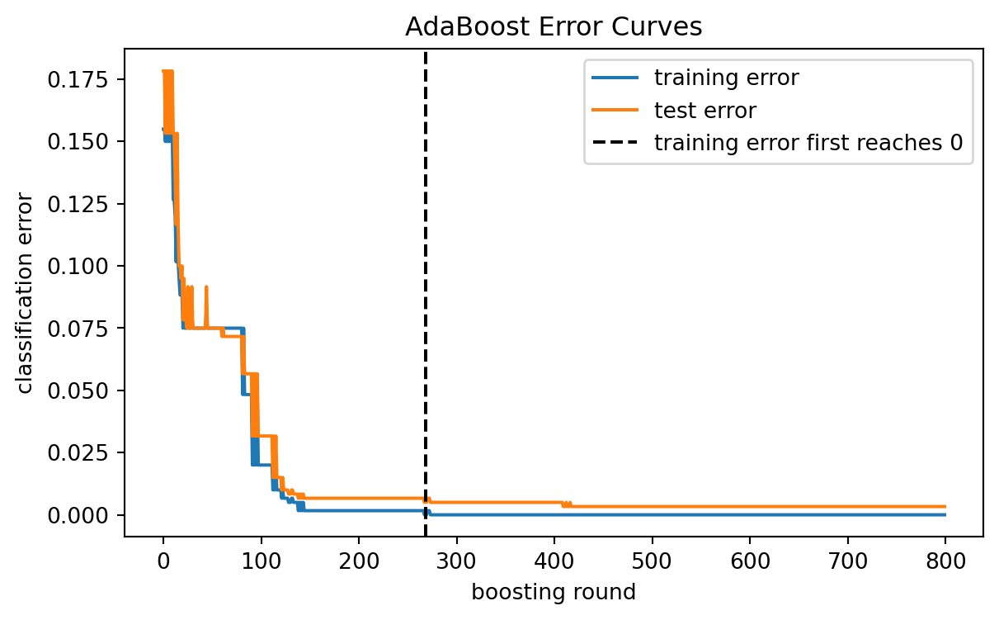
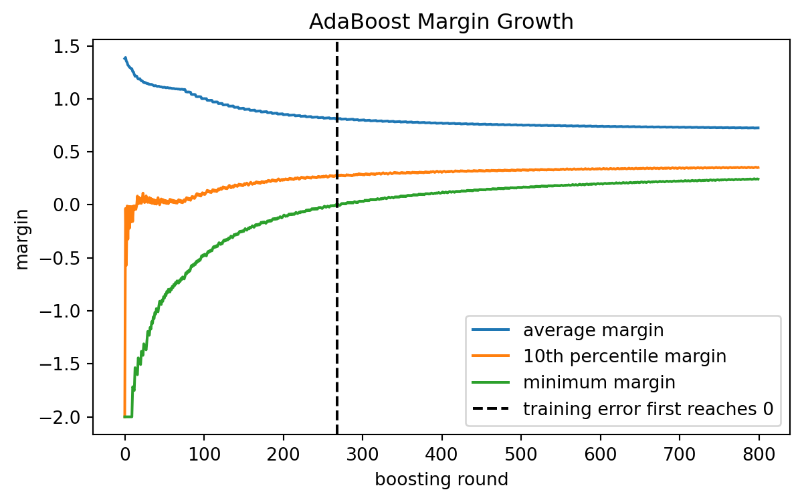
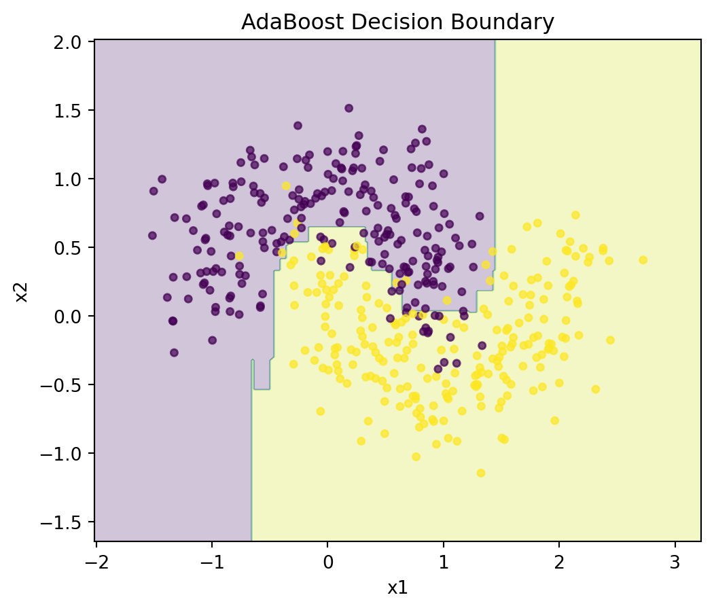
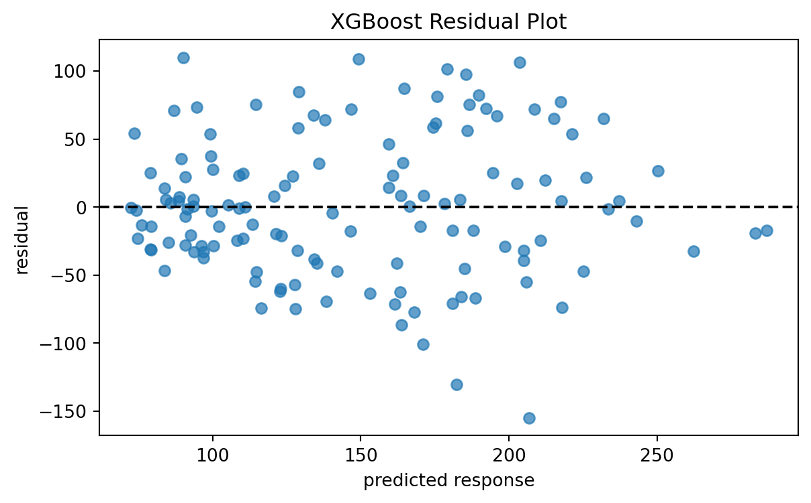
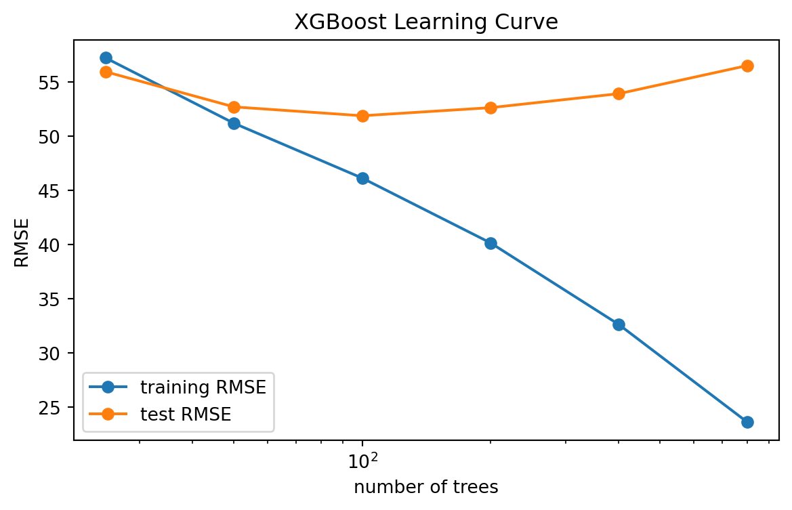

from sklearn.tree import DecisionTreeClassifier
DecisionTreeClassifier(max_depth=1)13 Boosting: AdaBoost and Gradient Boosting
\[ \require{physics} \require{braket} \]
\[ \newcommand{\dl}[1]{{\hspace{#1mu}\mathrm d}} \newcommand{\me}{{\mathrm e}} % \newcommand{\argmin}{\operatorname{argmin}} \newcommand{\rss}{\mathrm{RSS}} \newcommand{\ols}{\mathrm{OLS}} \newcommand{\ridge}{\mathrm{ridge}} \newcommand{\lasso}{\mathrm{lasso}} \newcommand{\mle}{\mathrm{MLE}} \newcommand{\constant}{\mathrm{constant}} \newcommand{\resid}{\mathrm{residual}} \newcommand{\span}{\mathrm{span}} \newcommand{\gini}{\mathrm{Gini}} \]
$$
$$
\[ \newcommand{\pdfbinom}{{\tt binom}} \newcommand{\pdfbeta}{{\tt beta}} \newcommand{\pdfpois}{{\tt poisson}} \newcommand{\pdfgamma}{{\tt gamma}} \newcommand{\pdfnormal}{{\tt norm}} \newcommand{\pdfexp}{{\tt expon}} \]
\[ \newcommand{\distbinom}{\operatorname{B}} \newcommand{\distbeta}{\operatorname{Beta}} \newcommand{\distgamma}{\operatorname{Gamma}} \newcommand{\distexp}{\operatorname{Exp}} \newcommand{\distpois}{\operatorname{Poisson}} \newcommand{\distnormal}{\operatorname{\mathcal N}} \]
Boosting is an ensemble method. Like bagging and random forests, it combines many trees into one model. The difference is how the trees are built.
Bagging and random forests build trees independently and then average them.
Boosting builds trees sequentially. Each new tree is trained to improve the current ensemble.
The central idea is:
Build many weak learners one at a time, and let each new learner focus on what the current model still gets wrong.
This chapter first discusses AdaBoost. AdaBoost is historically important and is the cleanest way to see the boosting idea. We then discuss the margin effect of AdaBoost and how to tune its hyperparameters. Finally, we discuss gradient boosting and use XGBoost as the main implementation example.
13.1 AdaBoost
AdaBoost stands for adaptive boosting.
AdaBoost is mainly a classification algorithm. To keep the notation simple, assume the response is binary:
\[ y_i\in\{-1,+1\}. \]
AdaBoost constructs a classifier of the form
\[ F_M(x) = \sum_{m=1}^M \alpha_m G_m(x), \]
where:
- \(G_m(x)\) is the \(m\)-th weak classifier,
- \(\alpha_m\) is the weight assigned to that classifier,
- \(M\) is the number of boosting rounds.
The final prediction is
\[ \hat G(x) = \operatorname{sign}\{F_M(x)\}. \]
Thus AdaBoost is a weighted voting method. Classifiers with larger \(\alpha_m\) have more influence in the final vote.
13.1.1 Weak Learners
AdaBoost is built from weak learners.
A weak learner is a classifier that is only slightly better than random guessing. In tree-based AdaBoost, the most common weak learner is a decision stump, which is a tree with only one split.
In sklearn, a decision stump is created by
A stump is very simple. By itself, it usually underfits. AdaBoost becomes powerful by combining many such weak learners.
NoteMain idea
A single stump is weak.
Many stumps, added adaptively, can form a strong classifier.
13.1.2 Weighted Classification
AdaBoost repeatedly changes the weights of the training observations.
At the beginning, all observations have the same weight:
\[ w_i^{(1)}=\frac1n, \quad i=1,\ldots,n. \]
At round \(m\), the weak learner is fit using the current weights \(w_i^{(m)}\). Observations with larger weights matter more when the tree chooses splits.
For a classification tree, this means that impurity measures such as Gini impurity use weighted counts rather than ordinary counts.
For example, if a node contains weighted class proportions \(p_+\) and \(p_-\), then the weighted Gini impurity is
\[ 1-p_+^2-p_-^2. \]
Thus AdaBoost does not need a completely new tree algorithm. It only needs a tree algorithm that can use observation weights.
13.1.3 The AdaBoost Algorithm
Suppose we have training data
\[ (x_1,y_1),\ldots,(x_n,y_n), \quad y_i\in\{-1,+1\}. \]
AdaBoost proceeds as follows.
- Initialize weights:
\[ w_i^{(1)}=\frac1n. \]
For boosting round \(m=1,\ldots,M\), fit a weak classifier \(G_m\) using the current weights.
Compute the weighted classification error:
\[ \operatorname{err}_m = \frac{ \sum_{i=1}^n w_i^{(m)} I(y_i\ne G_m(x_i)) }{ \sum_{i=1}^n w_i^{(m)} }. \]
- Assign a weight to the weak classifier:
\[ \alpha_m = \eta\log\left( \frac{1-\operatorname{err}_m}{\operatorname{err}_m} \right). \]
Here \(\eta>0\) is the learning rate. Some textbooks use \(\frac12\) in front of the logarithm. This only changes the scale of the classifier weights and can be absorbed into the learning rate.
- Update observation weights:
\[ w_i^{(m+1)} \leftarrow w_i^{(m)} \exp\left( -\alpha_m y_iG_m(x_i) \right). \]
Then normalize the weights so they sum to one.
The update has a simple interpretation:
- if \(G_m(x_i)=y_i\), then \(y_iG_m(x_i)=1\) and the weight decreases;
- if \(G_m(x_i)\ne y_i\), then \(y_iG_m(x_i)=-1\) and the weight increases.
Thus AdaBoost puts more weight on observations that were misclassified.
NoteLearning from mistakes
AdaBoost repeatedly shifts attention toward observations that earlier learners classified incorrectly.
13.1.4 Why the Learner Weight Makes Sense
The classifier weight is
\[ \alpha_m = \eta\log\left( \frac{1-\operatorname{err}_m}{\operatorname{err}_m} \right). \]
If \(\operatorname{err}_m\) is small, then the classifier is useful and \(\alpha_m\) is large.
If \(\operatorname{err}_m\) is close to \(1/2\), then the classifier is close to random guessing and \(\alpha_m\) is close to zero.
If \(\operatorname{err}_m>1/2\), then the classifier is worse than random guessing. In practice, this means the weak learner is not doing its job.
13.1.5 AdaBoost and Bias
A shallow tree has high bias because it is too simple. AdaBoost reduces this bias by adding many shallow trees.
Each new tree only needs to make a small improvement. The final model becomes flexible because many small improvements are accumulated.
This is different from bagging and random forests. Bagging mainly reduces variance by averaging unstable trees. Boosting mainly reduces bias by sequentially improving a weak model.
13.2 The Margin Effect of AdaBoost
AdaBoost is often explained as an algorithm that reduces training error. However, its behavior is more subtle than that.
For a binary classifier with labels \(y_i\in\{-1,+1\}\), define the margin of observation \(i\) as
\[ \operatorname{margin}_i = y_iF_M(x_i). \]
The sign of the margin determines whether the observation is classified correctly:
- if \(\operatorname{margin}_i>0\), the observation is correctly classified;
- if \(\operatorname{margin}_i<0\), the observation is misclassified.
The magnitude of the margin measures confidence. A large positive margin means the ensemble strongly supports the correct class.
13.2.1 Why Margins Matter
AdaBoost often continues to improve test performance even after the training error has reached zero. This can seem surprising. If the training error is already zero, what is left to improve?
The answer is margins.
After all training observations are classified correctly, AdaBoost may still increase the margins. Larger margins mean the classifier is more confident and more stable. This can improve generalization.
NoteMargin view
Training error only asks whether the margin is positive.
The margin view also asks how positive it is.
This is one reason AdaBoost can work well in practice. It does not only try to classify points correctly. It also tends to push correctly classified points farther away from the decision boundary.
13.2.2 Margin Plot in Python
The following example uses a clean two-moons dataset. We track training error, test error, and margins as the number of boosting rounds increases.
import numpy as np
import matplotlib.pyplot as plt
from sklearn.datasets import make_moons
from sklearn.model_selection import train_test_split
from sklearn.tree import DecisionTreeClassifier
from sklearn.ensemble import AdaBoostClassifier
from sklearn.metrics import zero_one_loss
X, y = make_moons(n_samples=1200, noise=0.08, random_state=2)
X_train, X_test, y_train, y_test = train_test_split(
X,
y,
test_size=0.5,
stratify=y,
random_state=2,
)
ada_margin = AdaBoostClassifier(
estimator=DecisionTreeClassifier(max_depth=1),
n_estimators=800,
learning_rate=0.1,
random_state=2,
)
ada_margin.fit(X_train, y_train)
train_errors = []
test_errors = []
margin_mean = []
margin_10pct = []
margin_min = []
y_train_signed = 2 * y_train - 1
for pred_train, pred_test, score_train in zip(
ada_margin.staged_predict(X_train),
ada_margin.staged_predict(X_test),
ada_margin.staged_decision_function(X_train),
):
train_errors.append(zero_one_loss(y_train, pred_train))
test_errors.append(zero_one_loss(y_test, pred_test))
margins = y_train_signed * score_train
margin_mean.append(np.mean(margins))
margin_10pct.append(np.quantile(margins, 0.10))
margin_min.append(np.min(margins))
first_zero = next((i + 1 for i, e in enumerate(train_errors) if e == 0), None)
print("First round with training error 0:", first_zero)
print("Minimum test error:", np.min(test_errors))
print("Round of minimum test error:", np.argmin(test_errors) + 1)First round with training error 0: 268
Minimum test error: 0.0033333333333332993
Round of minimum test error: 410Plot the data.
plt.figure(figsize=(6, 5))
plt.scatter(X[y == 0, 0], X[y == 0, 1], alpha=0.7, label="class 0")
plt.scatter(X[y == 1, 0], X[y == 1, 1], alpha=0.7, label="class 1")
plt.xlabel("x1")
plt.ylabel("x2")
plt.title("Two-Moons Data")
plt.legend()
plt.show()
Plot the training and test error curves.
plt.figure(figsize=(7, 4))
plt.plot(train_errors, label="training error")
plt.plot(test_errors, label="test error")
if first_zero is not None:
plt.axvline(
first_zero,
color="black",
linestyle="--",
label="training error first reaches 0",
)
plt.xlabel("boosting round")
plt.ylabel("classification error")
plt.title("AdaBoost Error Curves")
plt.legend()
plt.show()
Now plot margin growth.
plt.figure(figsize=(7, 4))
plt.plot(margin_mean, label="average margin")
plt.plot(margin_10pct, label="10th percentile margin")
plt.plot(margin_min, label="minimum margin")
if first_zero is not None:
plt.axvline(
first_zero,
color="black",
linestyle="--",
label="training error first reaches 0",
)
plt.xlabel("boosting round")
plt.ylabel("margin")
plt.title("AdaBoost Margin Growth")
plt.legend()
plt.show()
The error plot shows whether observations are classified correctly. The margin plot shows how strongly they are classified. The 10th percentile margin is useful because it tracks difficult observations without being dominated by a single extreme point.
13.3 Tuning AdaBoost Hyperparameters
The most important AdaBoost hyperparameters are:
| Parameter | Role |
|---|---|
n_estimators |
Number of weak learners. |
learning_rate |
Shrinks the contribution of each learner. |
estimator__max_depth |
Complexity of the base tree. |
estimator__min_samples_leaf |
Smoothness of each base tree. |
The two most important parameters are n_estimators and learning_rate.
13.3.1 Learning Rate and Number of Trees
There is a strong tradeoff:
- smaller
learning_rateusually needs largern_estimators; - larger
learning_ratelearns faster but can overfit or become unstable; - smaller
learning_rateoften gives smoother and more stable models.
Common values are:
learning_rate = 0.01
learning_rate = 0.05
learning_rate = 0.1
learning_rate = 1.013.3.2 Base Tree Depth
Decision stumps use max_depth=1. They are common because AdaBoost was originally designed around weak learners.
Using deeper trees allows each boosting round to model interactions.
For example:
max_depth=1models main effects through stumps;max_depth=2can model simple two-variable interactions;max_depth=3can model more complex interactions.
Deeper trees are stronger learners, but they also increase the risk of overfitting.
13.3.3 Grid Search for AdaBoost
The following code tunes AdaBoost by cross-validation.
from sklearn.model_selection import GridSearchCV
from sklearn.tree import DecisionTreeClassifier
from sklearn.ensemble import AdaBoostClassifier
ada = AdaBoostClassifier(
estimator=DecisionTreeClassifier(random_state=0),
random_state=0,
)
param_grid = {
"n_estimators": [100, 300, 600],
"learning_rate": [0.01, 0.05, 0.1, 0.5],
"estimator__max_depth": [1, 2, 3],
"estimator__min_samples_leaf": [1, 5, 10],
}
grid = GridSearchCV(
ada,
param_grid=param_grid,
cv=5,
scoring="accuracy",
n_jobs=-1,
)
grid.fit(X_train, y_train)
print(grid.best_params_)
print(grid.best_score_)Tuning should be done using validation data or cross-validation. The test set should be saved for the final evaluation.
CautionNoisy data
AdaBoost can be sensitive to mislabeled observations and outliers.
Because it repeatedly increases the weights of difficult observations, noisy points may receive too much attention.
13.4 Gradient Boosting
AdaBoost is one form of boosting. Modern boosting methods are usually based on gradient boosting.
The key idea is:
Fit each new learner to the direction that most improves the loss function.
For regression with squared error loss, this becomes especially simple. Each new tree is fit to the residuals of the current model.
Suppose we want to minimize
\[ L(y,F(x)) = \frac12(y-F(x))^2. \]
Start with a simple model:
\[ F_0(x)=\bar y. \]
At round \(m\), compute residuals
\[ r_i^{(m)} = y_i-F_{m-1}(x_i). \]
Fit a regression tree \(h_m(x)\) to these residuals. Then update the model:
\[ F_m(x) = F_{m-1}(x) + \eta h_m(x). \]
Here \(\eta\) is the learning rate.
Thus, for squared error loss, gradient boosting repeatedly fits trees to what remains unexplained.
13.4.1 Gradient View
For a general loss function \(L(y,F(x))\), the residual idea becomes a gradient idea.
At round \(m\), define pseudo-residuals
\[ r_i^{(m)} = - \left[ \frac{\partial L(y_i,F(x_i))}{\partial F(x_i)} \right]_{F=F_{m-1}}. \]
The new tree is fit to these pseudo-residuals. This is why the method is called gradient boosting: it moves the function estimate in the negative gradient direction.
13.4.2 Shrinkage
The learning rate \(\eta\) is also called shrinkage.
A small learning rate means each tree makes only a small correction. This usually requires more trees, but it often improves generalization.
A large learning rate means each tree makes a larger correction. This may learn quickly, but it can overfit.
13.4.3 Tree Depth and Interactions
The depth of each tree controls the interaction order.
A stump can only make one split, so it mainly captures main effects. A depth-2 tree can represent simple interactions. A deeper tree can represent more complex interactions.
In gradient boosting, trees are often shallow. The model becomes flexible by adding many shallow trees rather than by growing one very deep tree.
13.5 XGBoost
XGBoost stands for extreme gradient boosting.
It is a highly optimized and regularized implementation of gradient boosting. XGBoost became popular because it combines strong predictive performance with several practical regularization tools.
Important ideas in XGBoost include:
- gradient-based sequential tree fitting,
- learning rate shrinkage,
- tree depth control,
- row subsampling,
- column subsampling,
- regularization of leaf weights and tree complexity.
13.5.1 XGBoost Regressor
A typical XGBoost regression model looks like this.
from xgboost import XGBRegressor
xgb = XGBRegressor(
objective="reg:squarederror",
n_estimators=500,
learning_rate=0.05,
max_depth=3,
subsample=0.8,
colsample_bytree=0.8,
reg_lambda=1.0,
random_state=0,
n_jobs=-1,
)
xgb.fit(X_train, y_train)The most important hyperparameters are:
| Parameter | Meaning |
|---|---|
n_estimators |
Number of boosting rounds. |
learning_rate |
Step size for each tree. |
max_depth |
Depth of each tree. |
subsample |
Fraction of observations used for each tree. |
colsample_bytree |
Fraction of predictors used for each tree. |
reg_lambda |
L2 regularization on leaf weights. |
reg_alpha |
L1 regularization on leaf weights. |
13.5.2 Tuning XGBoost
The hyperparameters work together.
A common strategy is:
- Start with shallow trees, such as
max_depth=2ormax_depth=3. - Use a small learning rate, such as
0.03or0.05. - Use enough trees to let the model learn.
- Add subsampling to reduce overfitting.
- Tune regularization if the model still overfits.
Example grid:
from sklearn.model_selection import GridSearchCV
from xgboost import XGBRegressor
xgb = XGBRegressor(
objective="reg:squarederror",
random_state=0,
n_jobs=-1,
)
param_grid = {
"n_estimators": [200, 500, 800],
"learning_rate": [0.03, 0.05, 0.1],
"max_depth": [2, 3, 4],
"subsample": [0.7, 0.9, 1.0],
"colsample_bytree": [0.7, 0.9, 1.0],
"reg_lambda": [1.0, 5.0, 10.0],
}
grid = GridSearchCV(
xgb,
param_grid=param_grid,
cv=5,
scoring="neg_mean_squared_error",
n_jobs=-1,
)
grid.fit(X_train, y_train)For large grids, RandomizedSearchCV is usually more efficient than a full grid search.
13.5.3 Early Stopping
Boosting can overfit if too many trees are added. Early stopping monitors validation performance and stops when the validation score no longer improves.
Conceptually:
- Split the training data into a training part and a validation part.
- Fit trees sequentially.
- Track validation error after each round.
- Stop when validation error stops improving.
In XGBoost, early stopping is often used through an evaluation set.
xgb.fit(
X_train,
y_train,
eval_set=[(X_valid, y_valid)],
verbose=False,
)Exact early-stopping syntax can differ across XGBoost versions, so it is useful to check the installed version when writing production code.
13.6 Example 1: AdaBoost on a Nonlinear Classification Problem
We first use a synthetic nonlinear classification problem. This example shows that many weak learners can create a flexible decision boundary.
import numpy as np
import matplotlib.pyplot as plt
from sklearn.datasets import make_moons
from sklearn.model_selection import train_test_split, GridSearchCV
from sklearn.tree import DecisionTreeClassifier
from sklearn.ensemble import AdaBoostClassifier
from sklearn.metrics import accuracy_score
X, y = make_moons(n_samples=1500, noise=0.25, random_state=10)
X_train, X_test, y_train, y_test = train_test_split(
X,
y,
test_size=0.3,
stratify=y,
random_state=10,
)Fit a baseline stump and an AdaBoost model.
stump = DecisionTreeClassifier(max_depth=1, random_state=10)
ada = AdaBoostClassifier(
estimator=DecisionTreeClassifier(max_depth=1, random_state=10),
n_estimators=300,
learning_rate=0.05,
random_state=10,
)
stump.fit(X_train, y_train)
ada.fit(X_train, y_train)
print("Stump accuracy:", accuracy_score(y_test, stump.predict(X_test)))
print("AdaBoost accuracy:", accuracy_score(y_test, ada.predict(X_test)))Stump accuracy: 0.7888888888888889
AdaBoost accuracy: 0.8555555555555555Now tune the AdaBoost model.
ada_base = AdaBoostClassifier(
estimator=DecisionTreeClassifier(random_state=10),
random_state=10,
)
param_grid = {
"n_estimators": [100, 300, 600],
"learning_rate": [0.03, 0.05, 0.1],
"estimator__max_depth": [1, 2],
"estimator__min_samples_leaf": [1, 5],
}
grid = GridSearchCV(
ada_base,
param_grid=param_grid,
cv=5,
scoring="accuracy",
n_jobs=-1,
)
grid.fit(X_train, y_train)
best_ada = grid.best_estimator_
print("Best parameters:", grid.best_params_)
print("Best CV accuracy:", grid.best_score_)
print("Test accuracy:", accuracy_score(y_test, best_ada.predict(X_test)))Best parameters: {'estimator__max_depth': 2, 'estimator__min_samples_leaf': 5, 'learning_rate': 0.1, 'n_estimators': 600}
Best CV accuracy: 0.9266666666666665
Test accuracy: 0.9177777777777778Plot the decision boundary.
def plot_decision_boundary(model, X, y, title):
x0_min, x0_max = X[:, 0].min() - 0.5, X[:, 0].max() + 0.5
x1_min, x1_max = X[:, 1].min() - 0.5, X[:, 1].max() + 0.5
xx0, xx1 = np.meshgrid(
np.linspace(x0_min, x0_max, 300),
np.linspace(x1_min, x1_max, 300),
)
grid_points = np.c_[xx0.ravel(), xx1.ravel()]
zz = model.predict(grid_points).reshape(xx0.shape)
plt.figure(figsize=(6, 5))
plt.contourf(xx0, xx1, zz, alpha=0.25)
plt.scatter(X[:, 0], X[:, 1], c=y, s=15, alpha=0.7)
plt.xlabel("x1")
plt.ylabel("x2")
plt.title(title)
plt.show()
plot_decision_boundary(best_ada, X_test, y_test, "AdaBoost Decision Boundary")
The boundary is built from many simple stumps or shallow trees. Each individual tree is weak, but the weighted ensemble can create a nonlinear classifier.
13.7 Example 2: XGBoost on the Diabetes Data
We now use the diabetes regression dataset from sklearn. The response is a quantitative measure of disease progression one year after baseline.
This example uses XGBoost if it is installed. If XGBoost is not installed, the code prints a message instead of failing the whole document.
import numpy as np
import pandas as pd
import matplotlib.pyplot as plt
from sklearn.datasets import load_diabetes
from sklearn.model_selection import train_test_split, GridSearchCV
from sklearn.metrics import mean_squared_error, r2_score
from sklearn.ensemble import RandomForestRegressor, GradientBoostingRegressor
diabetes = load_diabetes(as_frame=True)
X = diabetes.data
y = diabetes.target
X_train, X_test, y_train, y_test = train_test_split(
X,
y,
test_size=0.3,
random_state=42,
)Fit a random forest, a sklearn gradient boosting model, and XGBoost.
try:
from xgboost import XGBRegressor
has_xgboost = True
except ImportError:
XGBRegressor = None
has_xgboost = False
models = {
"Random forest": RandomForestRegressor(
n_estimators=500,
max_features="sqrt",
random_state=42,
n_jobs=-1,
),
"Gradient boosting": GradientBoostingRegressor(
n_estimators=300,
learning_rate=0.05,
max_depth=2,
random_state=42,
),
}
if has_xgboost:
models["XGBoost"] = XGBRegressor(
objective="reg:squarederror",
n_estimators=300,
learning_rate=0.05,
max_depth=2,
subsample=0.8,
colsample_bytree=0.8,
reg_lambda=1.0,
random_state=42,
n_jobs=-1,
)
else:
print("xgboost is not installed, so the XGBoost model is skipped.")
results = []
for name, model in models.items():
model.fit(X_train, y_train)
pred = model.predict(X_test)
results.append(
{
"model": name,
"test_rmse": np.sqrt(mean_squared_error(y_test, pred)),
"test_r2": r2_score(y_test, pred),
}
)
pd.DataFrame(results)| model | test_rmse | test_r2 | |
|---|---|---|---|
| 0 | Random forest | 52.648723 | 0.486526 |
| 1 | Gradient boosting | 53.671369 | 0.466385 |
| 2 | XGBoost | 53.282261 | 0.474095 |
The random forest is an averaging method. Gradient boosting and XGBoost are sequential correction methods. Which one performs best depends on the dataset and tuning.
13.7.1 Tuning XGBoost
Now tune XGBoost by cross-validation. This chunk is skipped automatically if XGBoost is not installed.
if has_xgboost:
xgb_base = XGBRegressor(
objective="reg:squarederror",
random_state=42,
n_jobs=-1,
)
param_grid = {
"n_estimators": [100, 300, 600],
"learning_rate": [0.03, 0.05, 0.1],
"max_depth": [1, 2, 3],
"subsample": [0.7, 0.9, 1.0],
"colsample_bytree": [0.7, 0.9, 1.0],
"reg_lambda": [1.0, 5.0],
}
xgb_grid = GridSearchCV(
xgb_base,
param_grid=param_grid,
cv=5,
scoring="neg_mean_squared_error",
n_jobs=-1,
)
xgb_grid.fit(X_train, y_train)
best_xgb = xgb_grid.best_estimator_
xgb_pred = best_xgb.predict(X_test)
print("Best parameters:")
print(xgb_grid.best_params_)
print("Best CV RMSE:", np.sqrt(-xgb_grid.best_score_))
print("Test RMSE:", np.sqrt(mean_squared_error(y_test, xgb_pred)))
print("Test R^2:", r2_score(y_test, xgb_pred))
else:
best_xgb = None
xgb_pred = NoneBest parameters:
{'colsample_bytree': 0.9, 'learning_rate': 0.03, 'max_depth': 1, 'n_estimators': 300, 'reg_lambda': 5.0, 'subsample': 0.7}
Best CV RMSE: 57.92481233167317
Test RMSE: 51.37420881321203
Test R^2: 0.5110857980684191The tuning grid focuses on the most important parameters:
n_estimatorsandlearning_ratecontrol how long and how aggressively the model learns;max_depthcontrols interaction complexity;subsampleandcolsample_bytreeadd randomness and reduce overfitting;reg_lambdaregularizes leaf weights.
13.7.2 Predicted versus Observed Values
if best_xgb is not None:
plt.figure(figsize=(5, 5))
plt.scatter(y_test, xgb_pred, alpha=0.7)
lims = [
min(y_test.min(), xgb_pred.min()),
max(y_test.max(), xgb_pred.max()),
]
plt.plot(lims, lims, "k--", linewidth=2)
plt.xlabel("observed response")
plt.ylabel("predicted response")
plt.title("XGBoost Predictions")
plt.show()
Points near the diagonal are predicted accurately. Points far from the diagonal are observations where the model has larger error.
13.7.3 Residual Plot
if best_xgb is not None:
residuals = y_test - xgb_pred
plt.figure(figsize=(7, 4))
plt.scatter(xgb_pred, residuals, alpha=0.7)
plt.axhline(0, color="black", linestyle="--")
plt.xlabel("predicted response")
plt.ylabel("residual")
plt.title("XGBoost Residual Plot")
plt.show()
Residuals should be roughly centered around zero. A strong pattern may indicate missing structure or systematic bias.
13.7.4 Feature Importance
XGBoost provides impurity-like feature importance through .feature_importances_.
if best_xgb is not None:
importance = pd.Series(
best_xgb.feature_importances_,
index=X.columns,
).sort_values(ascending=True)
plt.figure(figsize=(7, 4))
importance.plot(kind="barh")
plt.xlabel("feature importance")
plt.title("XGBoost Feature Importance")
plt.show()
Feature importance describes how much the fitted model uses each predictor for prediction. It should not be interpreted as a causal effect.
13.7.5 Learning Curve
Finally, we can see how test error changes as the number of boosting rounds increases. For a fixed learning rate and tree depth, adding more trees usually improves the model at first. After some point, the test error may stop improving or begin to increase.
if has_xgboost:
tree_counts = [25, 50, 100, 200, 400, 800]
train_rmse = []
test_rmse = []
for n_trees in tree_counts:
model = XGBRegressor(
objective="reg:squarederror",
n_estimators=n_trees,
learning_rate=0.05,
max_depth=2,
subsample=0.8,
colsample_bytree=0.8,
reg_lambda=1.0,
random_state=42,
n_jobs=-1,
)
model.fit(X_train, y_train)
train_pred = model.predict(X_train)
test_pred = model.predict(X_test)
train_rmse.append(np.sqrt(mean_squared_error(y_train, train_pred)))
test_rmse.append(np.sqrt(mean_squared_error(y_test, test_pred)))
plt.figure(figsize=(7, 4))
plt.plot(tree_counts, train_rmse, marker="o", label="training RMSE")
plt.plot(tree_counts, test_rmse, marker="o", label="test RMSE")
plt.xscale("log")
plt.xlabel("number of trees")
plt.ylabel("RMSE")
plt.title("XGBoost Learning Curve")
plt.legend()
plt.show()
This plot is useful for deciding whether more trees are helpful. If training error keeps decreasing but test error does not, the model may be overfitting.
13.8 Summary
AdaBoost:
- builds weak learners sequentially,
- increases weights on misclassified observations,
- combines weak learners by weighted voting,
- can be understood through margins,
- is sensitive to noisy labels and outliers.
Gradient boosting:
- fits each new tree to residuals or negative gradients,
- works with many loss functions,
- usually uses shallow trees,
- relies heavily on learning rate, number of trees, and tree depth.
XGBoost:
- is a regularized and optimized gradient boosting implementation,
- adds row and column subsampling,
- includes regularization for tree complexity and leaf weights,
- is often very strong on tabular data,
- requires careful tuning.
The key distinction from bagging and random forests is that boosting is sequential. Each new tree depends on the current model and is trained to improve what remains unexplained.